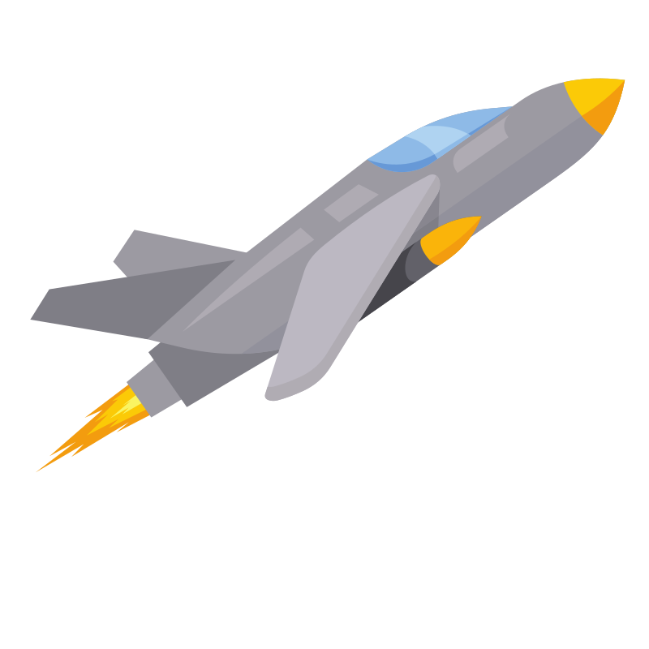
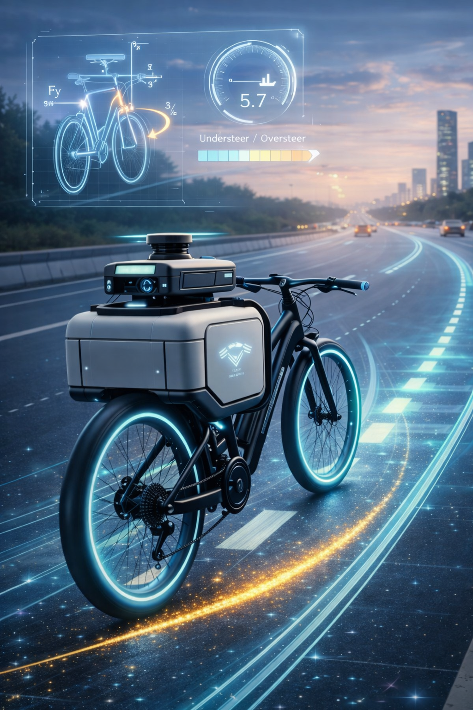
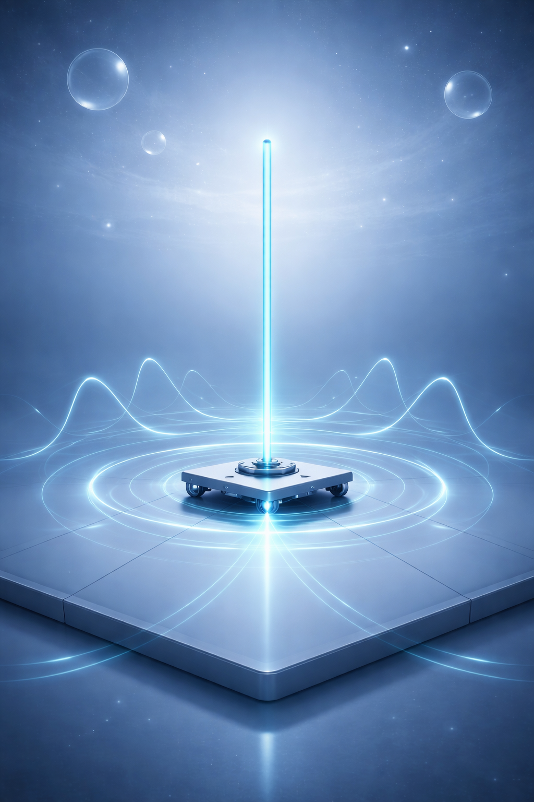
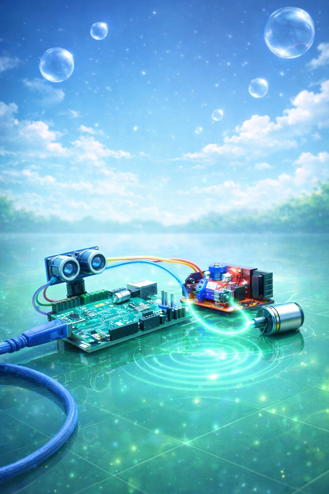

CONTROL SYSTEMS
Controls
Classical, optimal, and constrained control systems designed for robotics, vehicle dynamics, pursuit guidance, and embedded actuation platforms.
This domain focuses on engineering control systems across robotics, vehicle dynamics, optimal control, and real-time embedded hardware. Projects range from classical regulators to constrained optimization controllers used in guidance and stabilization problems.
PROJECTS
Control Systems Archive
Click any panel to open the corresponding GitHub repository.


DriftCTRL
A reinforcement learning control study evaluating PPO, DQN with discretized actions, and A2C within the CarRacing-v3 environment. The project analyzes policy stability, reward convergence, and control behaviour when learning driving strategies directly from visual observations.
Open Repository
VehicleLateralStability-Py
A vehicle lateral dynamics study using the linear bicycle model. The project compares feedforward steering, LQR regulation, and Sliding Mode Control under identical road curvature disturbances, highlighting the trade-offs between tracking performance, control effort, and robustness.
Open RepositoryInterceptDynamics-Py
A pursuit-evasion interception study comparing a PD baseline controller against constrained Model Predictive Control. The system models relative interceptor-target dynamics and evaluates performance through intercept time, minimum distance, control effort, and actuator saturation.
Open Repository
cart_pole_optimal_control
An LQR controller for stabilizing an inverted cart-pole implemented within ROS2 and Gazebo. The project includes system linearization, optimal gain computation using the Algebraic Riccati Equation, and disturbance rejection tests.
Open Repository
Ultrasonic PID Motor Control
A real-time motor speed control system using an ultrasonic sensor as distance reference, encoder feedback for speed measurement, and a PID controller deployed via Simulink auto-generated Arduino code.
Open Repository